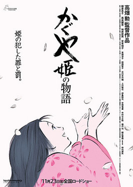
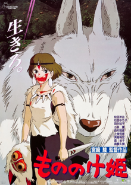
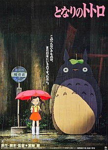
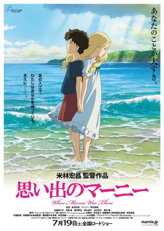

My Ranking
| # | Poster | Name | Score | Comment | Other rating |
|---|---|---|---|---|---|
| 1 |  | The Tale of Princess Kaguya | 10/10 | This movie is a masterpiece of both story-telling and visual. It is, without a doubt, Isao Takahata's best work. | Myanimelist
IMDb |
| 2 |  |
Spirited Away | 10/10 | One of the best movie about growing-up. An Oscar winner for a reason. | Myanimelist
IMDb |
| 3 | Only Yesterday | 9.5/10 | This movie makes me want to go to the countryside and become a farmer. After my most recent rewatch, I realize this movie is a better version of Disney's "Turning Red" | Myanimelist
IMDb |
|
| 4 |  |
The Wind Rises | 9/10 | Despite the bad pacing of the first half, The Wind Rises is a very heartbreaking romance and a truely inspiring story about following your dream. | Myanimelist
IMDb |
| 5 | .jpeg) |
Kiki's Delivery Service | 9/10 | A wholesome Slice of life. Amazing soundtrack. | Myanimelist
IMDb |
| 6 |  |
Grave of the Butterlies | 9/10 | Such a brutal and heavy anti-war movie. It can break even the toughest heart. | Myanimelist
IMDb |
| 7 | .jpg) |
Whisper of the Heart | 8/10 | (none) | Myanimelist
IMDb |
| 8 |  | Princess Mononoke | 8/10 | Watching Princess Mononoke, you will be lost in Miyazaki's fantasy world, where nature, gods and human try to survive and take advantage of each other, with such compelling plot and a great message about protecting nature. | Myanimelist
IMDb |
| 9 |  | My Neighbor Totoro | 8/10 | Basicly a try not to smile challenge. | Myanimelist
IMDb |
| 10 |  | When Marnie Was There | 7/10 | (none) | Myanimelist
IMDb |
| 11 | From Up on Poppy Hill | 7/10 | (none) | Myanimelist
IMDb |
|
| 12 |  |
Howl's Moving Castle | 7/10 | Beautiful music and animation. If I read the source material, I might love it more. But in this case, I don't. | Myanimelist
IMDb |
| 13 |  |
Ponyo | 6.5/10 | (none) | Myanimelist
IMDb |